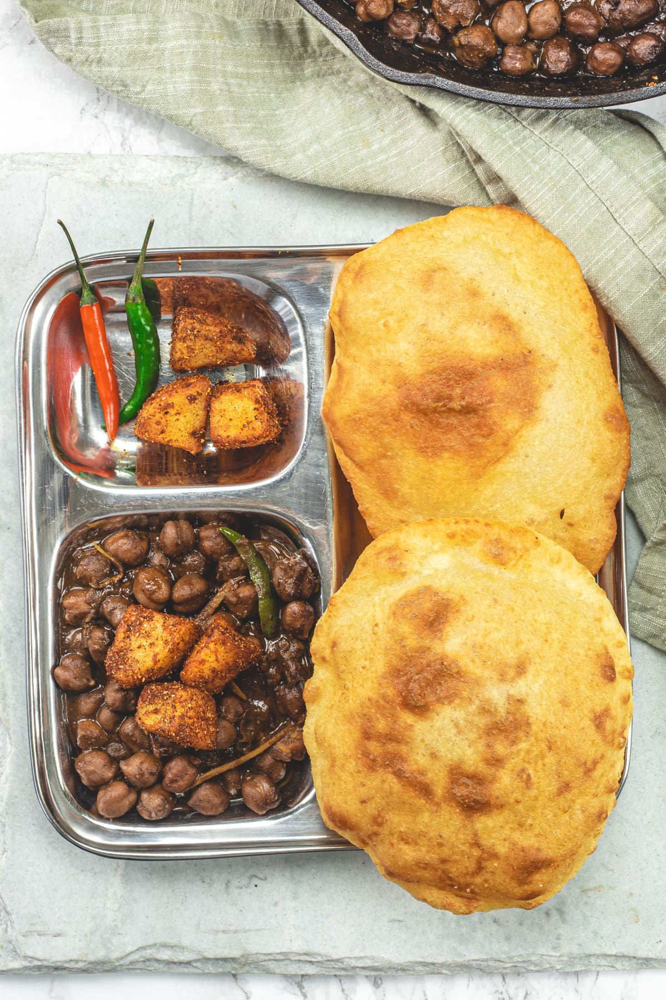

Chole Bhature
Ingredients
1. Chole (Chickpea Curry):
1 cup chickpeas (soaked overnight), 2 onions, finely chopped, 2 tomatoes, pureed, 2 green chilies, slit, 1-inch piece ginger, grated, 4-5 garlic cloves, minced, 1 tsp cumin seeds, 2-3 bay leaves, 1 black cardamom, 2-3 green cardamoms, 4-5 cloves, 1-inch cinnamon stick, 1 tsp red chili powder, 1 tsp turmeric powder, 1 tsp garam masala, 1 tsp chole masala (optional), Salt to taste, Fresh coriander leaves, chopped (for garnish), 2 tbsp oil or ghee
2. Bhature:
2 cups all-purpose flour (maida), 1/2 cup semolina (sooji/rava), 1/2 cup plain yogurt, 1 tsp sugar, 1/2 tsp baking soda, Salt to taste, Water as needed, Oil for deep frying,
Instruction
Chole (Chickpea Curry):
- Prepare Chickpeas: Drain the soaked chickpeas, rinse them well, and cook them in a pressure cooker with enough water and a pinch of salt until they are soft (about 4-5 whistles). Set aside.
- Make the Base: Heat oil or ghee in a large pan over medium heat. Add cumin seeds, bay leaves, black cardamom, green cardamoms, cloves, and cinnamon stick. Sauté until fragrant.
- Add Aromatics: Add the chopped onions and sauté until golden brown. Add the minced garlic, grated ginger, and slit green chilies. Cook for another 2-3 minutes.
- Cook Tomatoes: Add the pureed tomatoes and cook until the oil starts to separate from the mixture. This usually takes about 5-7 minutes.
- Spice It Up: Add red chili powder, turmeric powder, garam masala, chole masala (if using), and salt. Mix well and cook for another 2-3 minutes.
- Combine with Chickpeas: Add the cooked chickpeas along with the water they were cooked in. Mix well and let it simmer for 15-20 minutes, allowing the flavors to meld together. Adjust the consistency with more water if needed.
- Garnish: Turn off the heat and garnish with fresh coriander leaves. Set aside.
Bhature:
- Make the Dough: In a large mixing bowl, combine all-purpose flour, semolina, plain yogurt, sugar, baking soda, and salt. Mix well. Gradually add water to form a soft dough. Knead the dough well until it is smooth and elastic. Cover the dough with a damp cloth and let it rest for at least 1-2 hours.
- Shape Bhature: Divide the dough into small balls. Roll each ball into a smooth disc of about 4-5 inches in diameter, using a rolling pin. Make sure the rolled dough is not too thick or too thin.
- Fry Bhature: Heat oil in a deep frying pan over medium-high heat. Once the oil is hot, carefully slide in the rolled dough. Fry until it puffs up and turns golden brown on both sides. Remove and drain on paper towels. Repeat with the remaining dough.
Serve:
- Serve the hot Bhature with the prepared Chole. Enjoy this delicious combination with some sliced onions, green chilies, and a wedge of lemon on the side.